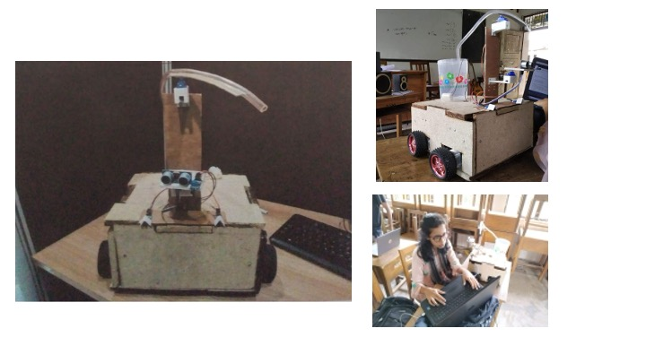

Fire Fighting Robot
Fire Fighting Robot is a machine that, after detecting a flame in its surroundings, goes to where the flame signal is coming from and then puts off the fire by spraying water.
This undergraduate project was built using Arduino. The robot is portable and can move in any direction without human intervention.


Three types of sensors were placed around the structure of the robot, and the structure holding the whole system was built to be sturdy. The machine can be placed inside a room with a flat floor surface. It requires low power and is inexpensive to build, making it a useful safety-focused undergraduate design project.